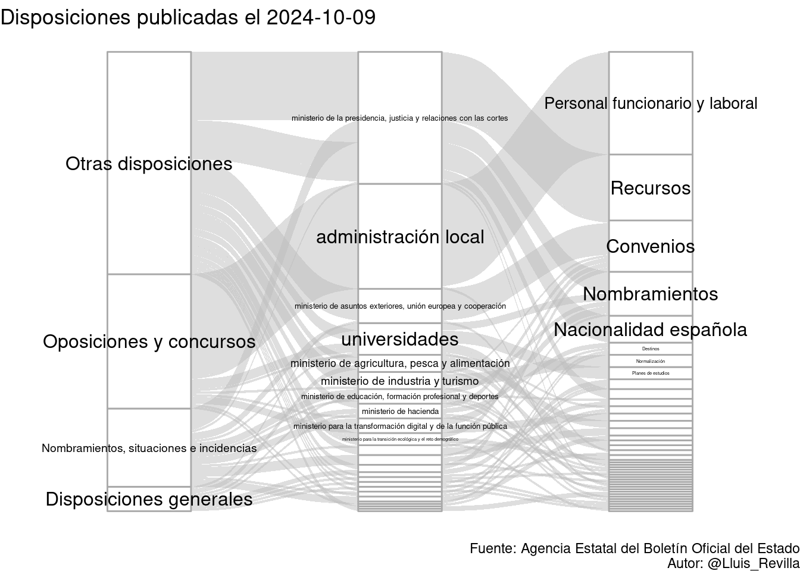
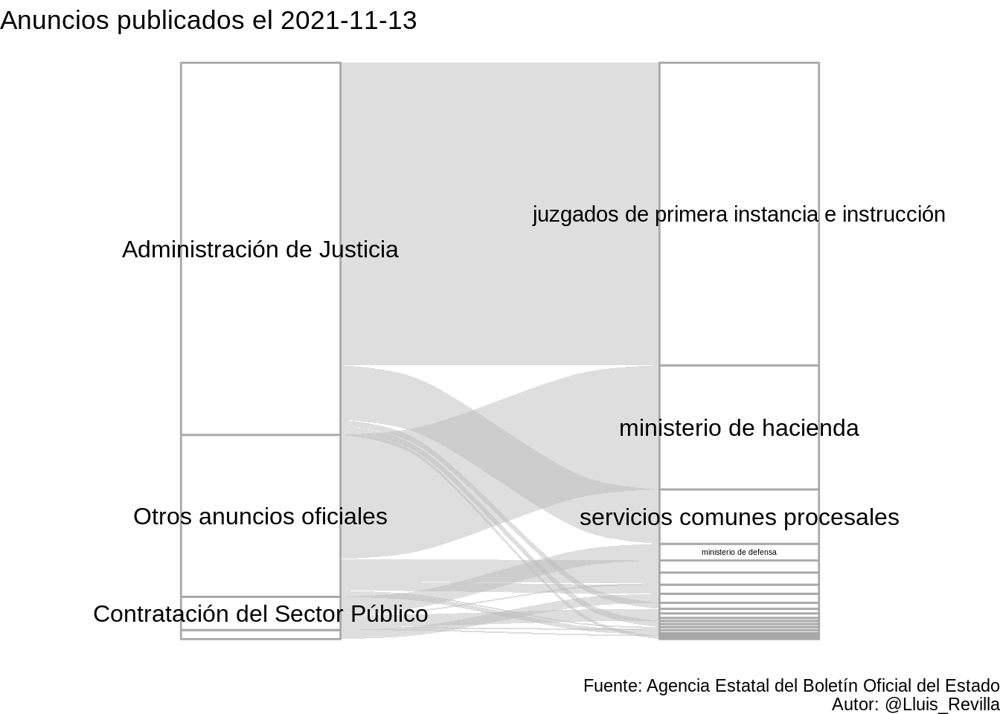

Esta página web contiene el último sumario del BOE publicado el 2022-05-28 con 340 publicaciones, de las cuales 16 son disposiciones. En total suman 494 páginas, 144 de las disposiciones.


Aquí está la tabla completa con sección, departamento, epígrafe, resumen, número de páginas y enlace: